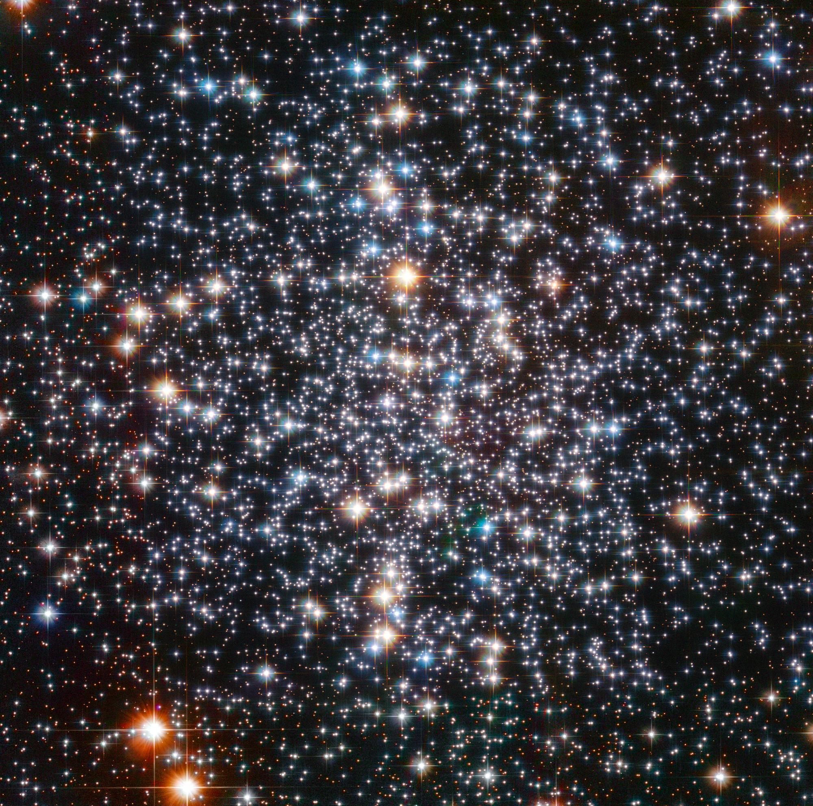
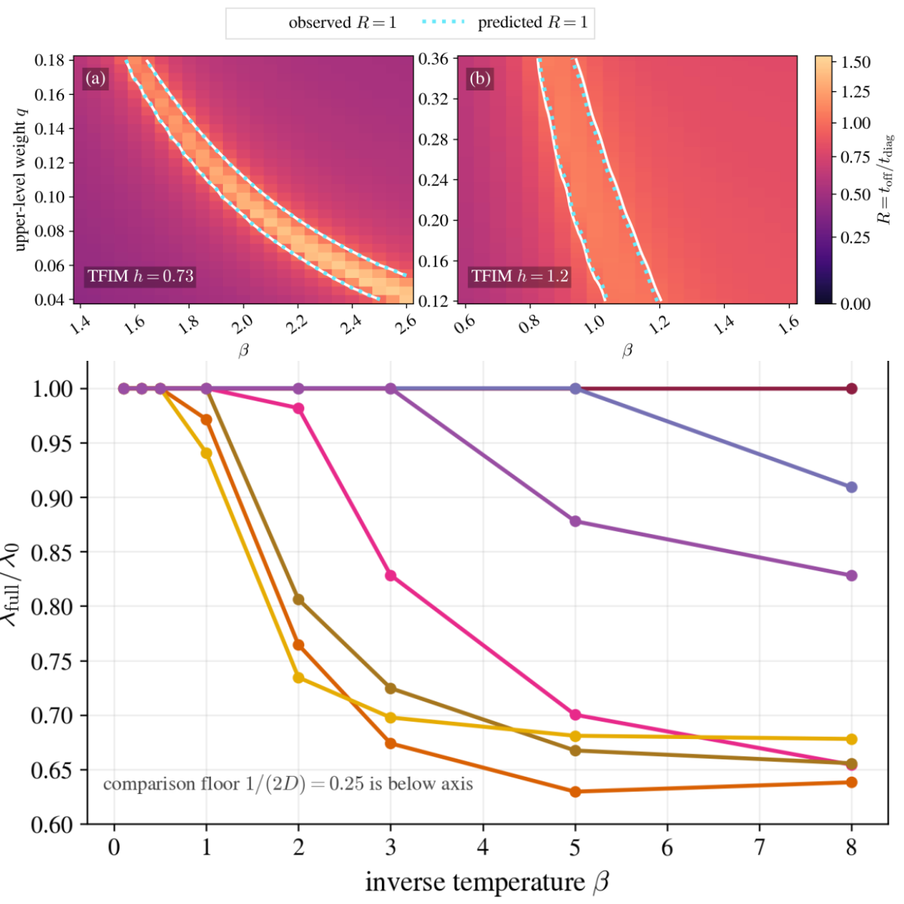
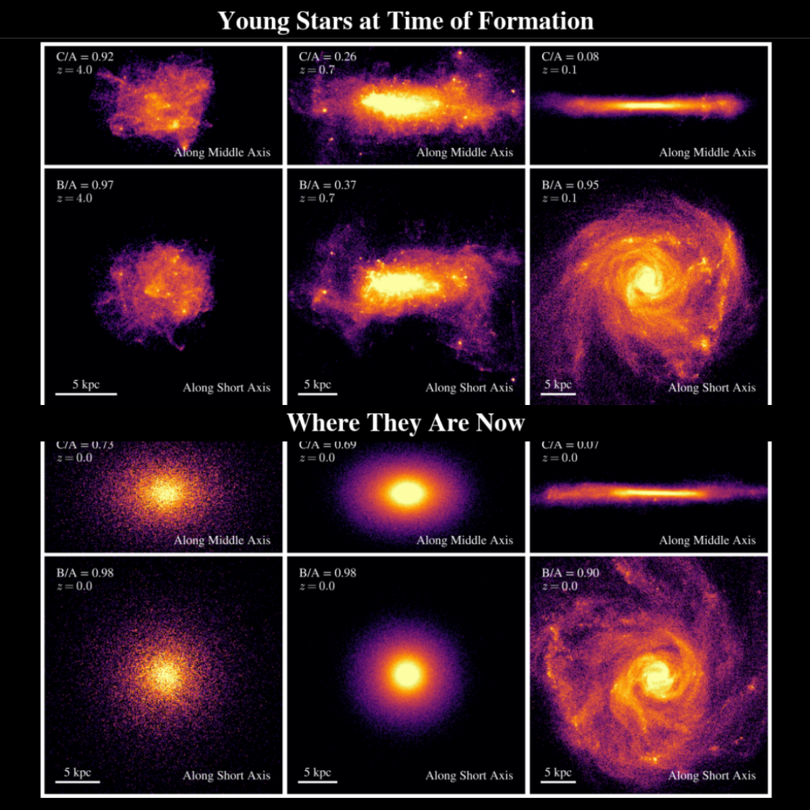
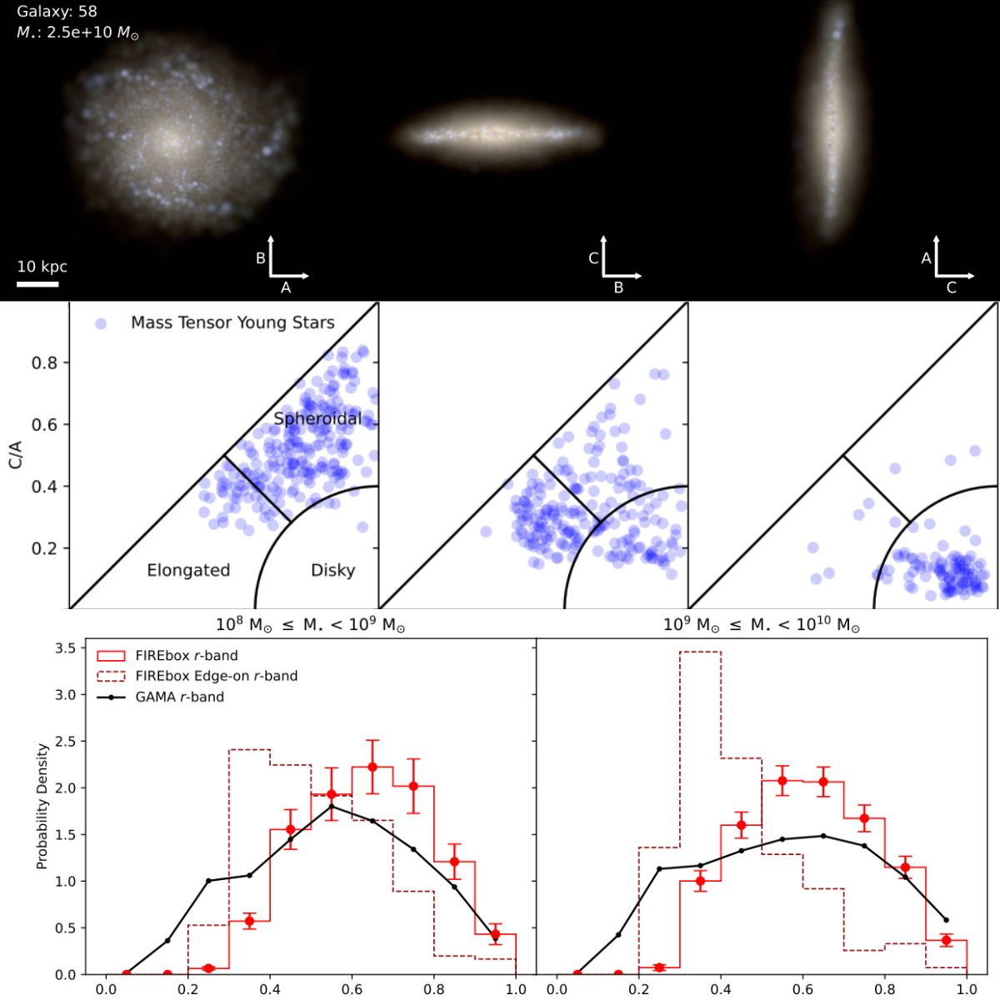
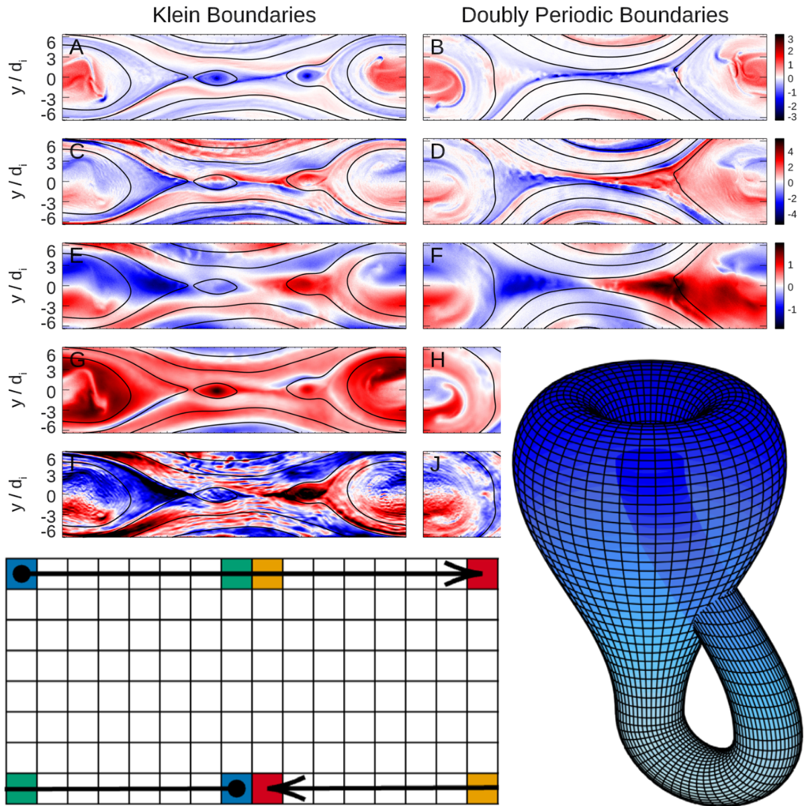

Graduate work
Cosmological simulations
In Fall 2026 I will be rotating with Tom Abel to work on the numerics of cosmological simulations.
Graduate work
In Fall 2026 I will be rotating with Tom Abel to work on the numerics of cosmological simulations.
Undergraduate work
I am incredibly fortunate to have been advised by Professors James Bullock, Sandy Irani, Marc Swisdak, Steve White, and Kyle Kremer. You can find out more about my work with them by clicking on the projects below.

Black Holes Hiding in Core-Collapsed ClustersCore-collapsed globular clusters are usually expected to have shed nearly all of their black holes, since black holes efficiently heat the cluster core and help hold off collapse. Using the Cluster Monte Carlo Code (CMC), we are simulating the late-time evolution of these systems to study whether a small number of retained black holes can survive into the core-collapsed phase. In one case so far, we find that a lone black hole can sink into the ultra-dense core and grow through repeated mergers with nearby stars, neutron stars, and white dwarfs. We are now exploring how general this channel is, and what it could mean for gravitational-wave sources detectable by LIGO/LISA and for electromagnetic transients from dense stellar systems.

Quantum Algorithms for Localized QMA SimulationsI study numerical methods for simulating localized QMA verification through quantum dynamical systems. I built optimized Julia workflows combining Monte Carlo methods with Lindbladian evolution, implemented adaptive Krylov exponentiation for Liouvillian time evolution, and used Arnoldi and Lanczos methods to calculate spectral gaps that control convergence bounds. This work will become my senior thesis, which I will link here once the final PDF is ready.

Pickles on FIRE: The 3D Shape Evolution of Simulated Milky Way-Mass GalaxiesWhat was the Milky Way’s 3D shape like when it was still forming? We use high-resolution Milky Way-like galaxy simulations to show that these galaxies were probably elongated at early times, even if they become more disk-like by the present day. Stellar populations that formed in elongated configurations can later relax into rounder, more symmetric shapes by z = 0, which means the present-day Milky Way does not preserve a simple visual record of its early structure. The work connects simulations of Milky Way progenitors to the elongated galaxies now being observed at high redshift with JWST and Hubble.

The Shape of FIREbox Galaxies and a Potential Tension with Low-Mass DisksHow well do simulated galaxies reproduce the shapes of real galaxies nearby? We measure the intrinsic 3D shapes of roughly 700 star-forming galaxies in the FIREbox simulation, then use radiative transfer to create mock observations and compare them with the GAMA survey. The apparent shape traced by light can differ substantially from the shape traced by stellar mass, so simulations and observations need to be compared on equal footing. Even after doing that, FIREbox produces too few very thin, low-mass disks, pointing to a possible tension between the simulations and the observed galaxy population.

Magnetic Reconnection on a Klein BottleCan the topology of a Klein bottle make plasma simulations more efficient? We introduce a new boundary condition for particle-in-cell simulations of magnetic reconnection that keeps only one current sheet while preserving the self-reinforcing behavior of a periodic system. The method cuts the computational cost relative to a fully periodic setup, reconnects more magnetic flux than conducting boundaries, and reproduces the expected features of reconnection without requiring assumptions about plasma outside the simulation domain.